Теоретическая механика - это наука об общих законах механического движения тел и о механических взаимодействиях между телами. Механическое движение представляет собой изменение с течением времени пространственного расположения тел относительно друг друга. Примерами механических взаимодействий могут служить давление одного тела на другое и взаимное притяжение тел.
Если движению тела по любому направлению в пространстве ничто не препятствует, то тело называют свободным, в противном случае - несвободным. Тела, препятствующие движению данного тела, называют связями. Несвободное тело можно представить свободным, отбросив связи и заменив их силами - силами реакций связей. В этом состоит аксиоматический принцип освобождаемости от связей. Общее правило для определения направления силы реакции таково: сила реакции действует противоположно тому направлению, по которому связь препятствует перемещению тела.
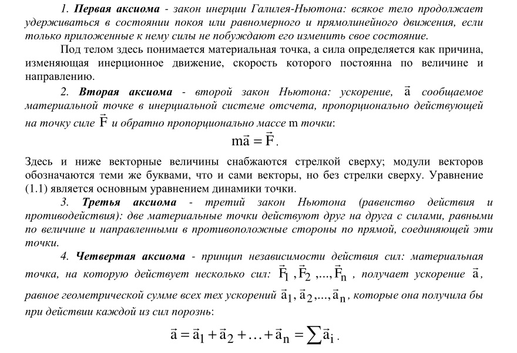
.jpg)
.jpg)
.jpg)
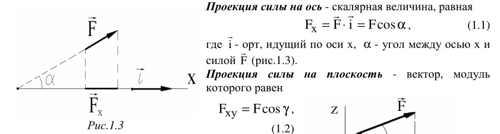
Равнодействующая системы сил – одна сила, эквивалентная системе сил.
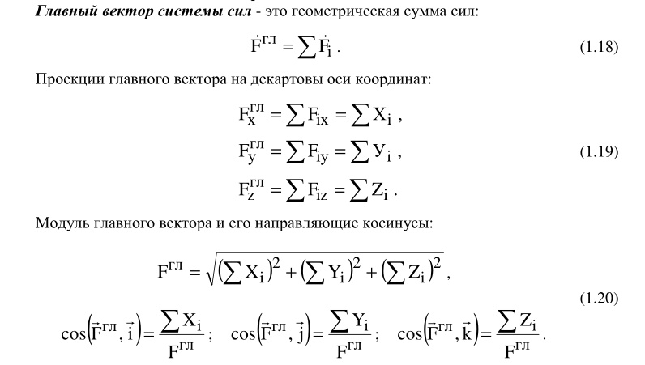
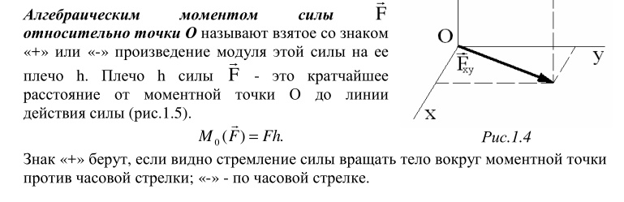 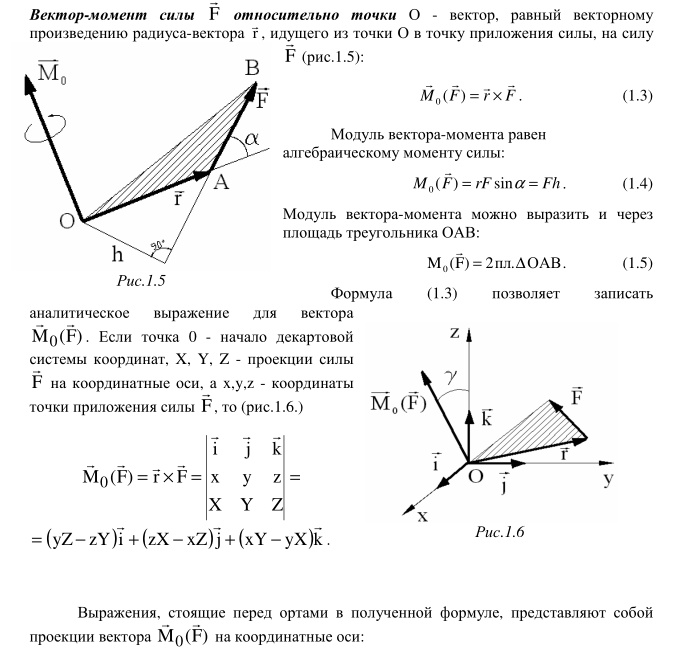 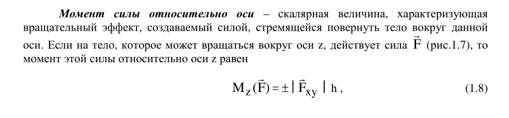 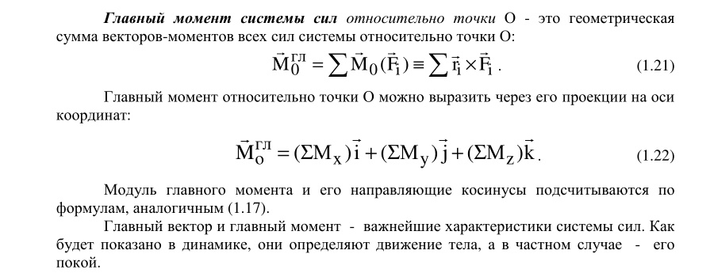
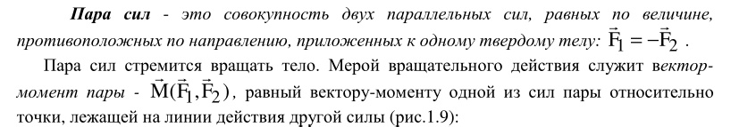 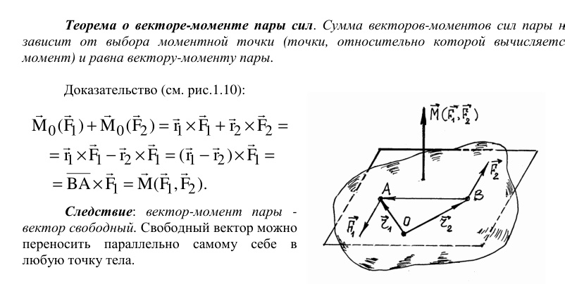 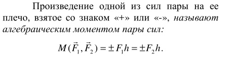
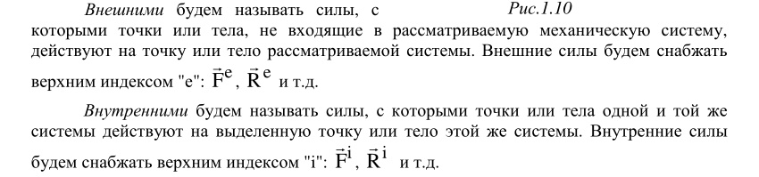 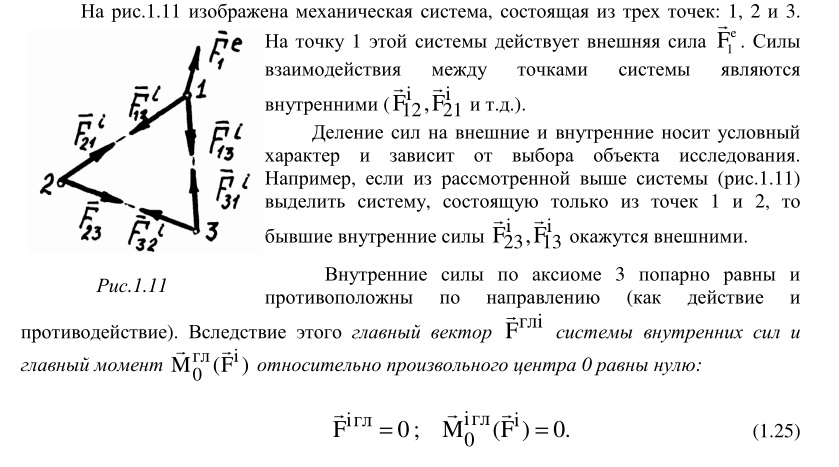
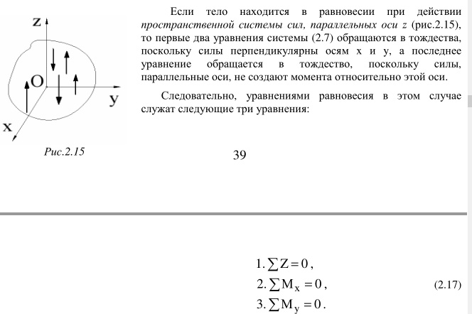
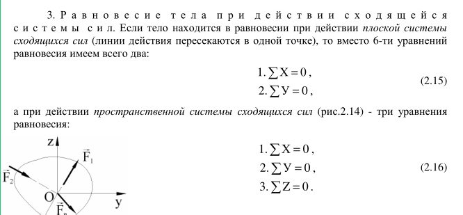
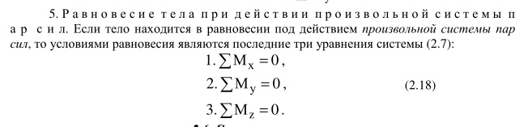
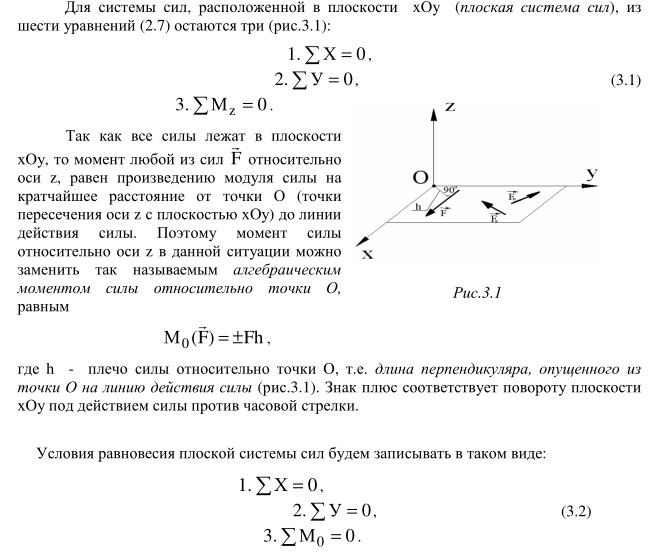
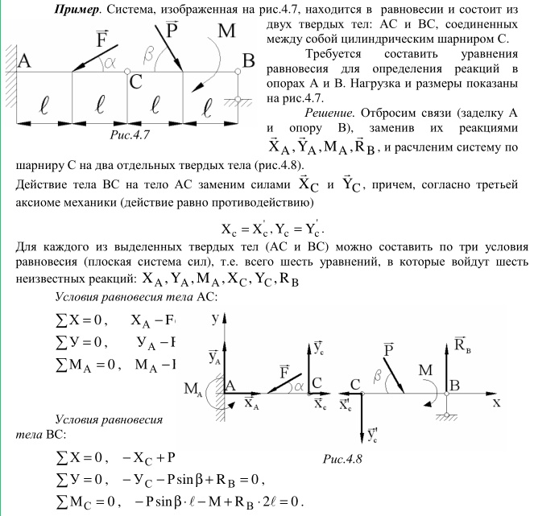
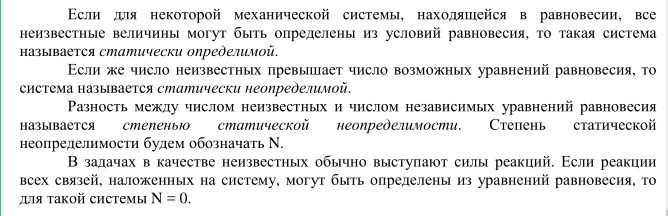 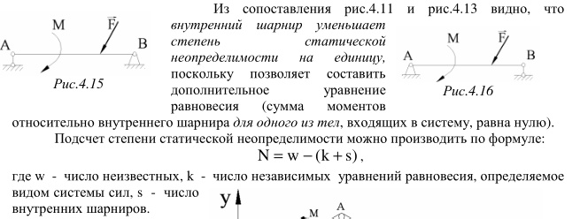
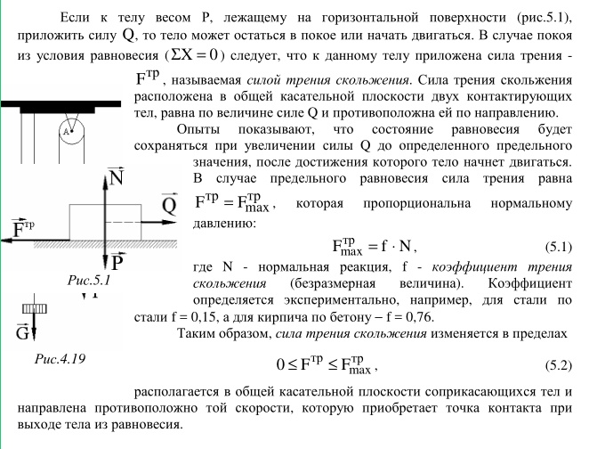 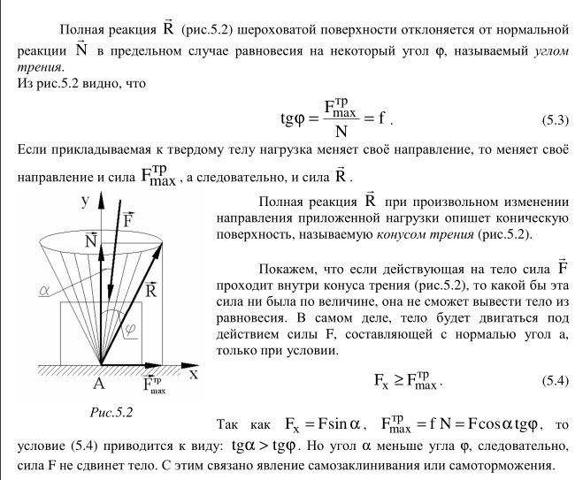
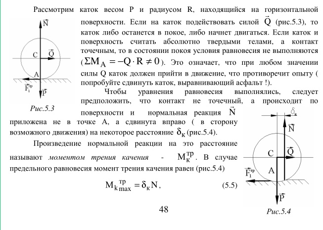 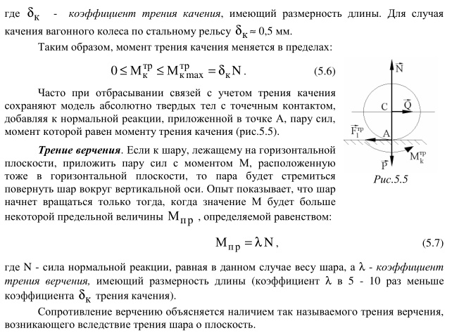
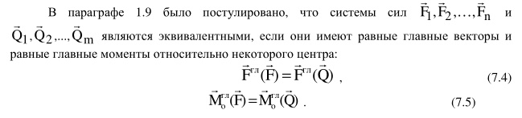 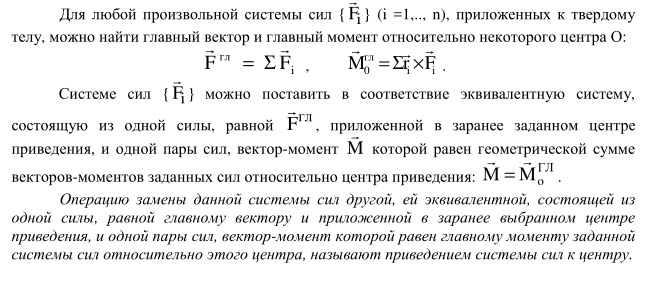